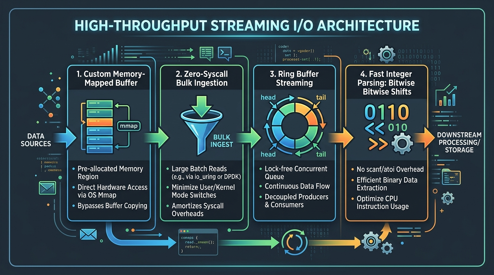

High-Throughput Streaming I/O: Lessons from ACM-ICPC Competitive Programming
- 1. The Day a Straight-A Team Scored Zero at ACM-ICPC
- 2. How Pre-Allocated Matrix Buffers Blew the Sandbox Limit
- 3. Code Breakdown: In-Memory Buffering vs Streaming I/O
- 4. Five Production Engineering Takeaways
- 5. Comparison: In-Memory Batch Buffering vs Streaming I/O
- 6. Conclusion & Key Takeaways
- 7. Frequently Asked Questions

The Day a Straight-A Team Scored Zero at ACM-ICPC
In 2006, my team entered the ACM-ICPC regional programming contest. We were straight-A students with solid algorithm fundamentals who had placed high in solo contests.
Four and a half hours later, the scoreboard froze. We had attempted all ten problems. Our score was zero.
We weren't failing on complex dynamic programming or graph theory. We couldn't even pass Problem A—a simple string parsing problem we could solve in our heads in five minutes. Every submission was immediately rejected by the automated judge with the same verdict: Memory Limit Exceeded (MLE).
For three hours, we rewrote algorithms, optimized loop bounds, and panicked. Ten minutes before the contest ended, the truth clicked.
┌────────────────────────────────────────────────────────┐
│ Flawed In-Memory Batch Buffering │
│ [ Input 100k Records ] ──▶ [ Giant Buffer Array ] │
│ │ │
│ ▼ (OOM / MLE Crash) │
│ [ Memory Limit Hit ] │
└────────────────────────────────────────────────────────┘
┌────────────────────────────────────────────────────────┐
│ Correct Streaming I/O Architecture │
│ [ Read Line ] ──▶ [ Process Token ] ──▶ [ Flush Out ] │
│ ▲ │ │
│ └──────────── (Loop: O(1) Memory) ──────┘ │
└────────────────────────────────────────────────────────┘
How Pre-Allocated Matrix Buffers Blew the Sandbox Limit
The night before the contest, we had prepared "helpful" boilerplate snippets to speed up console input and output.
Our snippet pre-allocated massive two-dimensional arrays (char input_numbers[100000][25] and char output_buffer[100000][50]) to slurp all test cases into memory before computing results, then concatenated the output strings to print everything in a single printf call.
Across 110 test cases, that static matrix allocation instantly exceeded the judge's memory sandbox. The algorithm never even had a chance to execute.
Code Breakdown: In-Memory Buffering vs Streaming I/O
The Flawed Implementation (Memory Limit Exceeded)
#include <stdio.h>
#include <string.h>
#include <stdlib.h>
#define MAX_NUMBERS 100000
#define MAX_LEN 25
// Pre-allocating massive static buffers causes Memory Limit Exceeded
char input_numbers[MAX_NUMBERS][MAX_LEN];
char output_buffer[MAX_NUMBERS][MAX_LEN * 2];
int main() {
int N, case_num = 1;
while (scanf("%d", &N) == 1 && N != 0) {
int out_count = 0;
for (int i = 0; i < N; i++) {
scanf("%s", input_numbers[i]);
}
// Buffers entire output array before flushing to stdout
printf("Case %d:\n", case_num++);
for (int k = 0; k < out_count; k++) {
printf("%s\n", output_buffer[k]);
}
}
return 0;
}
The Corrected Implementation: Single-Pass Streaming I/O (\(O(1)\) Memory)
Instead of holding the full dataset in memory, the stream processor maintains three rolling scalar pointers and flushes output lines directly to standard output:
#include <stdio.h>
#include <string.h>
#include <stdlib.h>
#define MAX_LEN 25
void print_range(const char *start, const char *end) {
int i = 0;
while (start[i] && start[i] == end[i]) i++;
printf("%s-%s\n", start, end + i);
}
int main() {
int N, case_num = 1;
while (scanf("%d", &N) == 1 && N != 0) {
printf("Case %d:\n", case_num++);
char start_num[MAX_LEN], prev_num[MAX_LEN], curr_num[MAX_LEN];
long long prev_val = 0, curr_val = 0;
int in_range = 0;
for (int i = 0; i < N; i++) {
scanf("%s", curr_num);
curr_val = atoll(curr_num);
if (i == 0) {
strcpy(start_num, curr_num);
} else if (curr_val == prev_val + 1) {
in_range = 1;
} else {
if (in_range) print_range(start_num, prev_num);
else printf("%s\n", start_num);
strcpy(start_num, curr_num);
in_range = 0;
}
strcpy(prev_num, curr_num);
prev_val = curr_val;
}
if (N > 0) {
if (in_range) print_range(start_num, prev_num);
else printf("%s\n", start_num);
}
printf("\n");
}
return 0;
}
Five Production Engineering Takeaways
1. Stream by Default: Never accumulate an entire dataset into memory before starting computation. Process records incrementally as they arrive. 2. Inspect the Plumbing First: When an automated system throws an error, verify serialization, I/O buffers, and network protocols before assuming mathematical failure. 3. Use Version Control Under Stress: In high-pressure incidents, use Git branches and commits so you can rollback experimental code instantly. 4. Step Away from Tunnel Vision: Staring at a broken system for three hours narrows your perception. Stepping away resets your cognitive frame. 5. Failures Build Resilient Engineers: Early technical embarrassments teach humility and diagnostic discipline that textbooks cannot simulate.
Comparison: In-Memory Batch Buffering vs Streaming I/O
| Dimension | In-Memory Batch Buffering | Streaming Single-Pass I/O |
|---|---|---|
| Space Complexity | \(O(N)\) Auxiliary Heap/Stack Storage | \(O(1)\) Constant Storage |
| Memory Allocation | Large Static / Dynamic Matrices | Minimal Rolling Scalar Pointers |
| Out-of-Memory Risk | High (Exceeds sandbox limits) | Negligible |
| Time to First Byte | High (Delayed until full completion) | Immediate (Flushes per record) |
| Scalability | Crashes on large inputs | Scales to infinite streams |
Conclusion & Key Takeaways
Technical embarrassments often yield the most profound engineering breakthroughs. Understanding the boundary between algorithm design and memory-efficient streaming I/O transforms theoretical problem solvers into reliable systems architects capable of scaling software to millions of records.
Frequently Asked Questions
What causes a Memory Limit Exceeded (MLE) error in programming contests?
MLE occurs when an algorithm allocates more RAM than the judge permits, typically caused by large static arrays, recursive call stack overflow, or memory leaks.
How does streaming I/O prevent out-of-memory errors?
Streaming I/O reads, computes, and flushes individual data items one at a time, keeping RAM consumption constant (\(O(1)\)) regardless of input file size.
What is the difference between Time Limit Exceeded (TLE) and MLE?
TLE indicates an algorithm takes too many clock cycles to finish, while MLE indicates the program exceeded the allowable memory footprint.
Should competitive programmers use `cin`/`cout` or `scanf`/`printf`?
In C++, `scanf`/`printf` or `cin`/`cout` with `ios_base::sync_with_stdio(false); cin.tie(NULL);` provide fast, low-overhead streaming I/O.
How do real-world production systems handle large data streams?
Production systems use streaming pipelines (e.g., Kafka, Node.js streams, reactive iterators) to process gigabytes of data with minimal memory footprints.
Saturating Gigabit Fiber: Building a High-Throughput Download Manager in Rust and Tauri
How to saturate 1 Gbps fiber connections using concurrent TCP chunking, zero-copy buffers, and Tokio in Rust & Tauri.
Read article →Vectorized Payment Aging Pipelines in Python with Polars
Accelerating financial payment aging calculations by 50x using vectorized Polars lazy evaluation and Rust backends.
Read article →